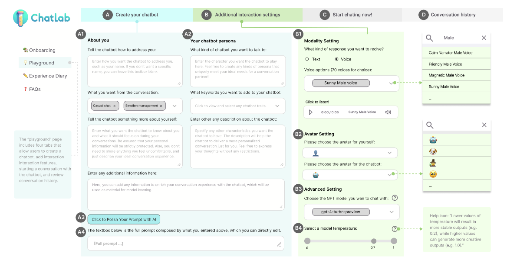

Prototype 01
ChatLab: Customizable LLM-Powered Chatbot Interface
Designed and implemented a web-based LLM chatbot interface supporting customizable personas and multimodal communication.
ChatLab was deployed in a one-week longitudinal field study with 22 participants and was later extended into ChatLab 2.0 for a public interactive workshop at the Hong Kong International AI Art Festival 2025.
Customizable personas
Multimodal interaction
Related publication: C1
